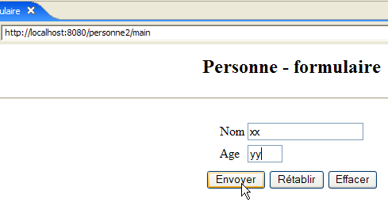
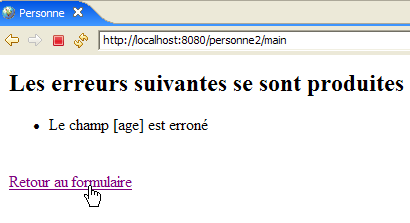
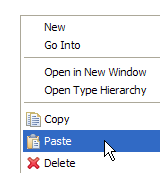
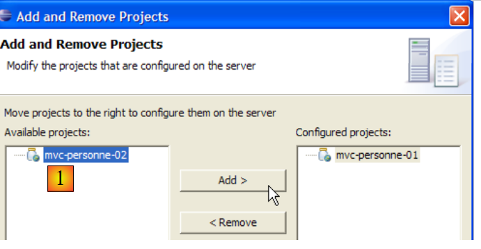
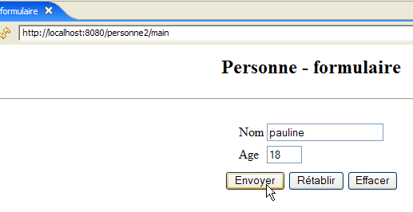
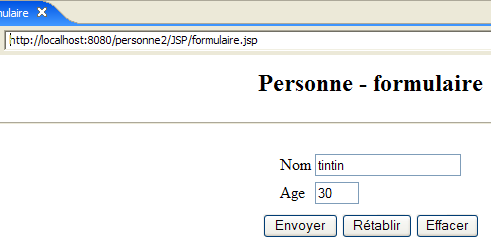

6. MVC Web 应用程序 [person] – 版本 2
接下来我们将介绍之前 [/person1] 应用程序的变体，我们将它们称为 [/person2, /person3, ...]。这些变体并未改变应用程序的原始架构，其架构仍如下所示：

对于这些变体，我们将简要说明。仅列出与上一版本相比所做的更改。
6.1. 简介
接下来，我们将为应用程序添加会话管理功能。让我们回顾以下要点：
- 客户端-服务器 HTTP 对话是一系列相互独立的请求-响应序列
- 会话作为同一用户不同请求-响应序列之间的内存缓冲区。如果有 N 个用户，则会有 N 个会话。
以下屏幕序列展示了当前应用程序运行中所需的功能：
交互 #1
 |  |
新功能是返回表单的链接，该链接已添加到 [errors] 视图中。
交流 #2
 |  |
在交互 #1 中，用户为 (name, age) 配对提供了值 (xx, yy)。如果服务器在交互过程中知晓了这些值，它会在交互结束时“忘记”它们。 然而，我们可以看到在交互 #2 中，服务器又能在响应中再次显示这些值。正是会话的概念，使得 Web 服务器能够在这类连续的客户端-服务器交互过程中存储数据。针对此问题，还有其他可能的解决方案。
在第 1 次交互中，服务器会将客户端发送的 (name, age) 数据对存储在会话中，以便在第 2 次交互时显示该信息。
以下是另一个在两次交互之间实现会话的示例：
第 1 次交互
 |  |
新功能是在回复页面上添加了返回表单的链接。
交流 #2
 |  |
6.2. Eclipse 项目
为了为 Web 应用程序 [/personne2] 创建 Eclipse 项目 [mvc-personne-02]，我们将复制 Eclipse 项目 [mvc-personne-01] 以复用现有代码。操作步骤如下：
[右键单击 mvc-personne-01 项目 -> 复制]：

然后 [在“包资源管理器”中右键单击 -> 粘贴]：
 |  - 在 [1] 中输入新项目的名称，并在 [2] 中输入一个已存在但为空的文件夹名称 |
随后将创建 [mvc-personne-02] 项目：

目前，该项目与 [mvc-personne-01] 项目完全相同。在能够使用它之前，我们需要进行一些手动修改。转到 [Servers] 视图，尝试将此新应用程序添加到由 Tomcat 管理的应用程序中：
 |  |
我们可以看到，在 [1] 中，新项目 [mvc-personne-02] 未被 Tomcat 识别。要让 Tomcat 识别该项目，必须修改 [mvc-personne-02] 项目的配置文件。请使用 [文件 / 打开文件] 选项打开文件 [<mvc-personne-02>/.settings/.component]：
<?xml version="1.0" encoding="UTF-8"?>
<project-modules id="moduleCoreId">
<wb-module deploy-name="mvc-personne-01">
<wb-resource deploy-path="/" source-path="/WebContent"/>
<wb-resource deploy-path="/WEB-INF/classes" source-path="/src"/>
<property name="java-output-path" value="/build/classes/"/>
<property name="context-root" value="personne1"/>
</wb-module>
</project-modules>
第 3 行指定了要在 Tomcat 中部署的 Web 模块的名称。此处，该名称与 [mvc-personne-01] 项目的名称相同。我们将它改为 [mvc-personne-02]：
<wb-module deploy-name="mvc-personne-02">
此外，我们还可以借此机会在第 7 行修改应用程序上下文 [mvc-personne-02] 的名称，因为它与项目 [mvc-personne-01] 的名称存在冲突：
<property name="context-root" value="personne2"/>
第二个更改本可以直接在 Eclipse 中进行。但是，我不知道如何在不通过配置文件的情况下进行第一个更改。
完成上述操作后，我们保存新的 [.content] 文件，然后退出并重新启动 Eclipse，以便更改生效。
Eclipse 重启后，让我们尝试之前失败的操作：
|  |
这次，[mvc-personne-02] 项目已被识别。我们将它添加到配置为在 Tomcat 上运行的项目中：

6.3. 配置 [personne2] Web 应用程序
/personne2 应用程序的 web.xml 文件如下：
<?xml version="1.0" encoding="UTF-8"?>
<web-app id="WebApp_ID" version="2.4"
xmlns="http://java.sun.com/xml/ns/j2ee"
xmlns:xsi="http://www.w3.org/2001/XMLSchema-instance"
xsi:schemaLocation="http://java.sun.com/xml/ns/j2ee http://java.sun.com/xml/ns/j2ee/web-app_2_4.xsd">
<display-name>mvc-personne-02</display-name>
<!-- ServletPersonne -->
<servlet>
<servlet-name>personne</servlet-name>
<servlet-class>
istia.st.servlets.personne.ServletPersonne
</servlet-class>
<init-param>
<param-name>urlReponse</param-name>
<param-value>
/WEB-INF/vues/reponse.jsp
</param-value>
</init-param>
<init-param>
<param-name>urlErreurs</param-name>
<param-value>
/WEB-INF/vues/erreurs.jsp
</param-value>
</init-param>
<init-param>
<param-name>urlFormulaire</param-name>
<param-value>
/WEB-INF/vues/formulaire.jsp
</param-value>
</init-param>
<init-param>
<param-name>urlControleur</param-name>
<param-value>
main
</param-value>
</init-param>
<init-param>
<param-name>lienRetourFormulaire</param-name>
<param-value>
Retour au formulaire
</param-value>
</init-param>
</servlet>
<!-- Mapping ServletPersonne-->
<servlet-mapping>
<servlet-name>personne</servlet-name>
<url-pattern>/main</url-pattern>
</servlet-mapping>
<!-- welcome files -->
<welcome-file-list>
<welcome-file>index.jsp</welcome-file>
</welcome-file-list>
</web-app>
该文件与上一版本中的文件完全相同，只是声明了两个新的初始化参数：
- 第 6 行：Web 应用程序的显示名称已更改为 [mvc-personne-02]
- 第 31–36 行：定义名为 [urlController] 的配置参数，该参数是通往 [ServletPersonne] Servlet 的 [主] URL
- 第 37–42 行：定义了一个名为 [lienRetourFormulaire] 的配置参数，该参数是 JSP 页面 [erreurs.jsp] 和 [reponse.jsp] 上返回表单链接的文本。
主页 [index.jsp] 的更改：
<%@ page language="java" contentType="text/html; charset=ISO-8859-1"
pageEncoding="ISO-8859-1"%>
<!DOCTYPE HTML PUBLIC "-//W3C//DTD HTML 4.01 Transitional//EN">
<%
response.sendRedirect("/personne2/main");
%>
- 第 5 行：[index.jsp] 页面将客户端重定向到 [/personne2] 应用程序中 [ServletPersonne] 控制器的 URL。
6.4. 视图代码
6.4.1. [form] 视图
此视图与上一版本完全相同：

它由以下 JSP 页面 [formulaire.jsp] 生成：
<%@ page language="java" contentType="text/html; charset=ISO-8859-1"
pageEncoding="ISO-8859-1"%>
<!DOCTYPE HTML PUBLIC "-//W3C//DTD HTML 4.01 Transitional//EN">
<%
// on récupère les données du modèle
String nom=(String)session.getAttribute("nom");
String age=(String)session.getAttribute("age");
String urlAction=(String)request.getAttribute("urlAction");
%>
<html>
<head>
<title>Personne - formulaire</title>
</head>
<body>
<center>
<h2>Personne - formulaire</h2>
<hr>
<form action="<%=urlAction%>" method="post">
<table>
<tr>
<td>Nom</td>
<td><input name="txtNom" value="<%= nom %>" type="text" size="20"></td>
</tr>
<tr>
<td>Age</td>
<td><input name="txtAge" value="<%= age %>" type="text" size="3"></td>
</tr>
<tr>
</table>
<table>
<tr>
<td><input type="submit" value="Envoyer"></td>
<td><input type="reset" value="Rétablir"></td>
<td><input type="button" value="Effacer"></td>
</tr>
</table>
<input type="hidden" name="action" value="validationFormulaire">
</form>
</center>
</body>
</html>
最新动态：
- 第 19 行：表单现在具有一个 [action] 属性，其值为用户点击 [提交] 按钮时浏览器将表单值提交到的 URL。变量 [urlAction] 的值将为 action="main"。用户执行以下操作后，将显示 [form] 视图：
- 初始请求：GET /person2/main
- 点击 [返回表单] 链接：GET /person2/main?action=retourFormulaire
由于 [action] 属性指定的不是绝对 URL（以 / 开头），而是相对 URL（不以 / 开头），因此浏览器会使用当前显示页面的 URL 的第一部分 [/person2]，并在其后附加该相对 URL。 因此，POST URL 将变为 [/person2/main]，即控制器 URL。此 POST 请求将携带第 23、27 和 38 行中的参数 [txtName, txtAge, action]。
- 第 8 行：我们从模型中获取 [urlAction] 元素的值。该值是从当前请求的属性中获取的，将在第 19 行使用。
- 第 6–7 行：我们从模型中获取 [name, age] 元素的值。这些值是从会话属性中获取的，而不是像前一个版本那样从请求属性中获取。这是为了适应 [response] 和 [errors] 视图中链接发起的 [GET /person2/main?action=returnToForm] 请求。 在显示这两个视图之前，控制器会将表单中输入的数据存入会话中，这样当用户点击 [response] 和 [errors] 视图中的 [返回表单] 链接时，控制器就能检索到这些数据。
6.4.2. [response] 视图
当表单中的值有效时，此视图会显示这些值：
 | |
与上一版本相比，新功能是 [返回表单] 链接。该视图由以下 JSP 页面 [response.jsp] 生成：
<%@ page language="java" contentType="text/html; charset=ISO-8859-1"
pageEncoding="ISO-8859-1"%>
<!DOCTYPE HTML PUBLIC "-//W3C//DTD HTML 4.01 Transitional//EN">
<%
// on récupère les données du modèle
String nom=(String)request.getAttribute("nom");
String age=(String)request.getAttribute("age");
String lienRetourFormulaire=(String)request.getAttribute("lienRetourFormulaire");
%>
<html>
<head>
<title>Personne</title>
</head>
<body>
<h2>Personne - réponse</h2>
<hr>
<table>
<tr>
<td>Nom</td>
<td><%= nom %>
</tr>
<tr>
<td>Age</td>
<td><%= age %>
</tr>
</table>
<br>
<a href="?action=retourFormulaire"><%= lienRetourFormulaire %></a>
</body>
</html>
- 第 31 行：返回表单的链接。该链接包含两个部分：
- 目标 [href="?action=retourFormulaire"]。当表单 [formulaire.jsp] 通过 POST 方法提交至 URL [/personne2/main] 后，将显示 [response] 视图。因此，当 [response] 视图显示时，浏览器中显示的正是该 URL。 点击 [返回表单] 链接将触发浏览器向链接 [href] 属性指定的 URL 发送 GET 请求，本例中即为 "?action=retourFormulaire"。若 [href] 中未指定 URL，浏览器将使用当前显示视图的 URL，即 [/personne2/main]。 最终，点击 [返回表单] 链接将触发浏览器向 URL [/person2/main?action=retourFormulaire] 发送 GET 请求，即应用程序控制器的 URL 附带 [action] 参数以告知其执行什么操作。
- 链接文本。这将成为控制器发送至页面并由第 10 行检索的模板的一部分。
6.4.3. [errors]视图
该视图以表单形式显示输入错误：
|
与上一版本相比，新功能是 [返回表单] 链接。该视图由以下 JSP 页面 [errors.jsp] 生成：
<%@ page language="java" contentType="text/html; charset=ISO-8859-1"
pageEncoding="ISO-8859-1"%>
<!DOCTYPE HTML PUBLIC "-//W3C//DTD HTML 4.01 Transitional//EN">
<%@ page import="java.util.ArrayList" %>
<%
// on récupère les données du modèle
ArrayList erreurs=(ArrayList)request.getAttribute("erreurs");
String lienRetourFormulaire=(String)request.getAttribute("lienRetourFormulaire");
%>
<html>
<head>
<title>Personne</title>
</head>
<body>
<h2>Les erreurs suivantes se sont produites</h2>
<ul>
<%
for(int i=0;i<erreurs.size();i++){
out.println("<li>" + (String) erreurs.get(i) + "</li>\n");
}//for
%>
</ul>
<br>
<a href="?action=retourFormulaire"><%= lienRetourFormulaire %></a>
</body>
</html>
- 第 26 行：返回表单的链接。此链接与 [response] 视图中的链接完全相同。如有必要，建议读者查阅该视图的说明。
6.5. 测试视图
要测试前面的视图，我们需要在Eclipse项目的/WebContent/JSP文件夹中复制相应的JSP页面：

然后，在 JSP 文件夹中，对页面进行如下修改：
[form.jsp]:
...
<%
// -- test : on crée le modèle de la page
session.setAttribute("nom","tintin");
session.setAttribute("age","30");
request.setAttribute("urlAction","main");
%>
<%
// on récupère les données du modèle
String nom=(String)session.getAttribute("nom");
String age=(String)session.getAttribute("age");
String urlAction=(String)request.getAttribute("urlAction");
%>
第 4–5 行是新增的，用于创建第 11–13 行中页面所需的模型。
[response.jsp]:
<%
// -- test : on crée le modèle de la page
request.setAttribute("nom","milou");
request.setAttribute("age","10");
request.setAttribute("lienRetourFormulaire","Retour au formulaire");
%>
<%
// on récupère les données du modèle
String nom=(String)request.getAttribute("nom");
String age=(String)request.getAttribute("age");
String lienRetourFormulaire=(String)request.getAttribute("lienRetourFormulaire");
%>
第4至6行是添加的，用于生成第11至13行中页面所需的模板。
[errors.jsp]:
<%
// -- test : on crée le modèle de la page
ArrayList<String> erreurs1=new ArrayList<String>();
erreurs1.add("erreur1");
erreurs1.add("erreur2");
request.setAttribute("erreurs",erreurs1);
request.setAttribute("lienRetourFormulaire","Retour au formulaire");
%>
<%
// on récupère les données du modèle
ArrayList erreurs=(ArrayList)request.getAttribute("erreurs");
String lienRetourFormulaire=(String)request.getAttribute("lienRetourFormulaire");
%>
第 4–8 行是新增的，用于创建第 13–14 行中页面所需的模型。
如果 Tomcat 尚未运行，请先启动它，然后请求以下 URL：
 |  |
 |
我们获得了预期的浏览量。
6.6. [ServletPersonne] 控制器
[/personne2] Web 应用程序的 [ServletPersonne] 控制器将处理以下操作：
否。 | 请求 | 来源 | 处理 |
1 | [GET /person2/hand] | 用户输入的 URL | - 发送空的 [form] 视图 |
2 | [POST /person2/hand] 并携带参数 [txtName, txtAge, action] | 点击 [提交] 按钮 [表单]中的[提交]按钮 | - 检查参数 [txtName, txtAge] 的值 - 如果值不正确，则返回视图 [errors(errors)] - 如果参数正确，则返回 [response(name,age)] 视图 |
3 | [GET /person2/main? action=returnForm] | 点击 [返回 表单] 链接 响应] 和 [errors] 中的 [返回表单]。 | - 发送已预先填入最新输入值的 [表单] 视图 |
因此，我们需要处理一个新的操作：[GET /person2/main?action=returnForm]。
6.6.1. 控制器骨架
控制器骨架 [ServletPersonne] 与上一版本几乎完全相同：
新增内容：
- 第 4 行：使用会话需要导入 [HttpSession] 包
- 第 28–30 行：新方法 [doRetourFormulaire] 处理新的操作：[GET /personne2/main?action=retourFormulaire]。
6.6.2. [init] 控制器的初始化
[init] 方法与上一版本完全相同。它会检查 [web.xml] 文件中 [parameters] 数组中声明的元素：
- 第 5 行：已添加参数 [controllerUrl]（控制器 URL）和 [formBackLink]（用于 [response] 和 [errors] 视图的链接文本）。
6.6.3. [doGet] 方法
[doGet] 方法必须处理 [GET /person2/main?action=formSubmit] 操作，该操作此前并不存在：
- 第 6–14 行：我们检查初始化错误列表是否为空。如果不是，则显示 [errors(initializationErrors)] 视图，该视图将报告错误。
要理解这段代码，你需要回顾一下 [errors] 视图模板：
<%
// on récupère les données du modèle
ArrayList erreurs=(ArrayList)request.getAttribute("erreurs");
String lienRetourFormulaire=(String)request.getAttribute("lienRetourFormulaire");
%>
[errors]视图期望请求中包含一个名为"errors"的键值对。控制器在第8行创建了该键值对。该视图还期望包含一个名为"formSubmitLink"的键值对。控制器在第9行创建了该键值对。在此处，链接文本将为空。 因此，发送的 [errors] 视图中将不包含任何链接。实际上，如果应用程序初始化过程中出现错误，则必须重新配置应用程序。没有必要通过链接为用户提供继续应用程序的选项。
- 第 34–37 行：处理新操作 [GET /person2/main?action=returnForm]
6.6.4. [doInit] 方法
该方法处理请求 #1 [GET /person2/main]。对于此请求，它必须返回空的 [form(name,age)] 视图。其代码如下：
- 第 4 行：如果当前会话存在则获取它；否则，则创建会话（将 getSession 参数设置为 true）。
- 第 9–10 行：显示 [form] 视图。回顾该视图所需的模板：
<%
// on récupère les données du modèle
String nom=(String)session.getAttribute("nom");
String age=(String)session.getAttribute("age");
String urlAction=(String)request.getAttribute("urlAction");
%>
- 第 6-7 行：将 [form] 视图模型的 [name, age] 元素初始化为空字符串，并将其放入会话中，因为视图期望从该位置获取这些数据。
- 第 8 行：模型的 [urlAction] 元素使用 [web.xml] 文件中 [urlController] 参数的值进行初始化，并放入请求中。
6.6.5. [doValidationFormulaire] 方法
该方法处理请求 #2 [POST /person2/main]，其中提交的参数为 [action, txtName, txtAge]。其代码如下：
- 第 5–6 行：我们从客户端的请求中获取“txtNom”和“txtAge”参数的值。
- 第 8–10 行：将这些值存储在会话中，以便用户在 [response] 和 [errors] 视图上点击 [返回表单] 链接时能够检索到它们。
- 第 12–19 行：检查这两个参数值的有效性。
- 第 21–28 行：如果任一参数无效，则显示 [errors(errors,returnToFormLink)] 视图。回顾该视图的模板：
<%
// on récupère les données du modèle
ArrayList erreurs=(ArrayList)request.getAttribute("erreurs");
String lienRetourFormulaire=(String)request.getAttribute("lienRetourFormulaire");
%>
- 第 30–34 行：如果检索到的两个参数“txtName”和“txtAge”具有有效值，则显示 [response(name, age, formSubmitLink)] 视图。请记住 [response] 视图模板：
<%
// on récupère les données du modèle
String nom=(String)request.getAttribute("nom");
String age=(String)request.getAttribute("age");
String lienRetourFormulaire=(String)request.getAttribute("lienRetourFormulaire");
%>
6.6.6. [doRetourFormulaire] 方法
该方法处理请求 #3 [GET /person2/main?action=formSubmit]。其代码如下：
该方法执行完成后，应显示 [form] 视图，并预先填入用户的最新输入内容。以下是 [form] 视图模板：
<%
// on récupère les données du modèle
String nom=(String)session.getAttribute("nom");
String age=(String)session.getAttribute("age");
String urlAction=(String)request.getAttribute("urlAction");
%>
因此，[doRetourFormulaire] 方法必须构建之前的模型。
- 第 4 行：我们检索控制器中存储了输入值（姓名、年龄）的会话。
- 第 7 行：我们从会话中检索姓名
- 第 8–9 行：如果该字段不存在，则将其添加并赋予空值。在应用程序的正常运行过程中，这种情况不应发生，因为 [returnForm] 操作总是发生在 [validateForm] 操作之后，而 [validateForm] 操作是在输入数据已保存到会话之后进行的。但是，由于会话的有效期有限（通常为几十分钟），因此可能会过期。 在此情况下，第 4 行创建了一个新会话，该会话中将找不到 name 字段。因此，我们在新会话中设置一个空的 name 值。
- 第 11–13 行：对年龄字段也进行同样的处理
- 如果忽略会话过期的问题，那么第 3–13 行是多余的。模型中的 [name, age] 元素已经存在于会话中。因此，没有必要将它们放回会话中。
- 第 15 行：我们设置模型中 [urlAction] 元素的值
6.7. 测试
启动或重启 Tomcat。访问 URL [http://localhost:8080/personne2]，然后重复第 6.1 节示例中展示的测试。